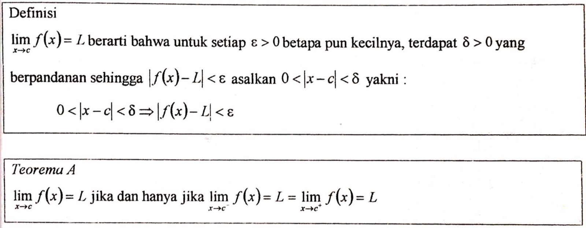
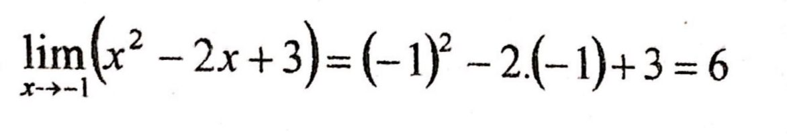
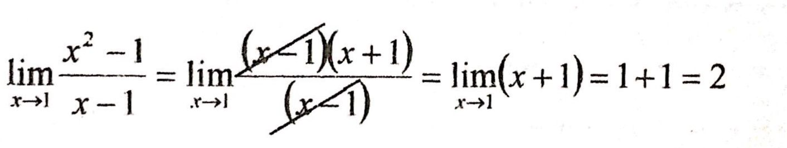
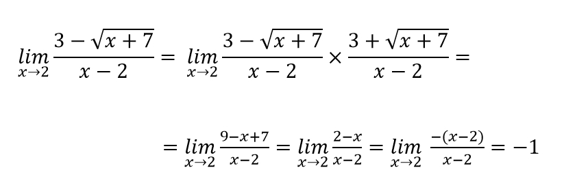
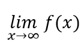
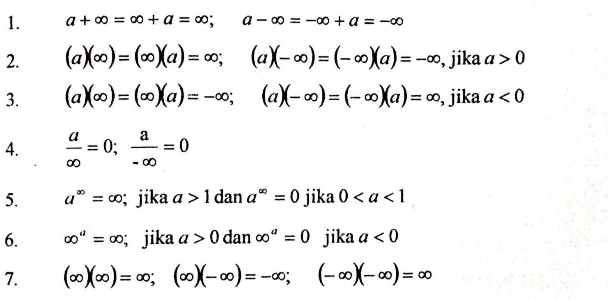
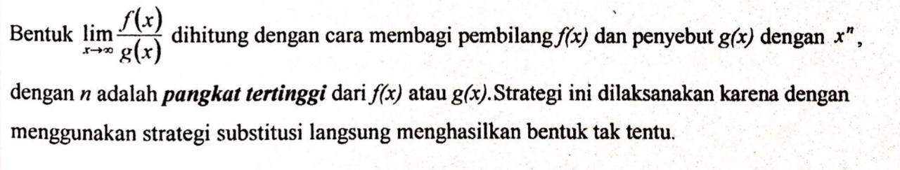
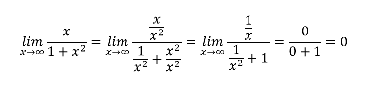
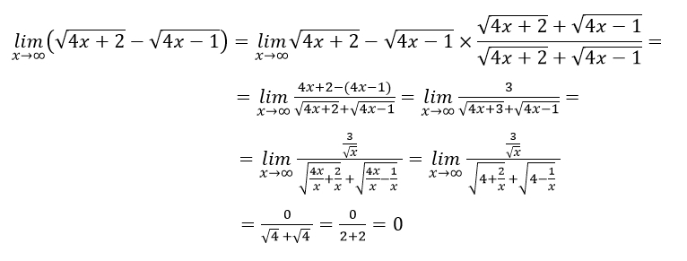
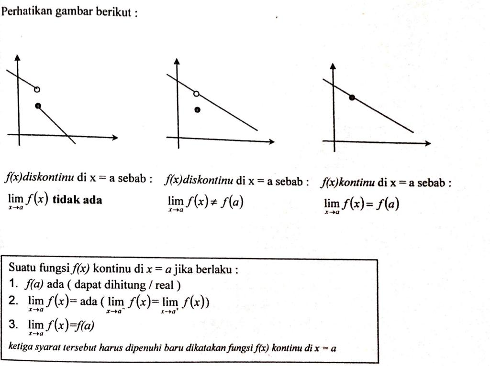

Matematika Wajib
Limit Fungsi
- Pengertian
-
Limit adalah nilai yang didekati fungsi saat suatu titik mendekati nilai tertentu. Limit terdiri dari limit kiri dan kanan. Bentuk umum fungsi limit:

- Sifat Limit Fungsi
- Cara Menyelesaikan Soal Limit
-
Substitusi langsung
Solusi pertama untuk menyelesaikan persoalan limit. Jika dari hasil substitusi langsung diperoleh nilai bukan tak tentu, maka nilai itu adalah menunjukkan nilai dari limit yang bersangkutan. Contoh:

-
Faktorisasi
Jika dari hasil substitusi langsung diperoleh nilai bentuk tak tentu, maka kita harus memfaktorkannya sehingga bentuknya menjadi bukan bentuk tak tentu. Contoh:

-
Mengalikan dengan bentuk sekawan
Cara ini digunakan pada limit bentuk irasional, yakni pada soal limit yang fungsinya berbentuk akar. Tentunya cara ini digunakan ketika mendapat bentuk tak tentu setelah mencoba menggunakan substitusi langsung. Contoh:

- Limit Ketakhinggaan, Limit-Limit Tak Terhingga
-
Limit tak hingga adalah kajian yang tepat dalam mengetahui kecenderungan suatu fungsi apabila nilai variabelnya dibuat semakin besar. Limit tak hingga dapat dijumpai saat limit dimana nilai x mendekati tak hingga yang artinya nilai x semakin besar atau bertambah besar tanpa batas.

Definisi-definisi yang harus diperhatikan:

- Cara Menyelesaikan Soal Limit di Tak Berhingga
-
Substitusi langsung

-
Membagi dengan Pangkat Tertinggi

-
Mengalikan dengan Faktor Sekawan

- Kontinuitas dan Diskontinuitas Fungsi
-
Fungsi dapat dikatakan kontinu bila fungsi tersebut terus berlanjut.
